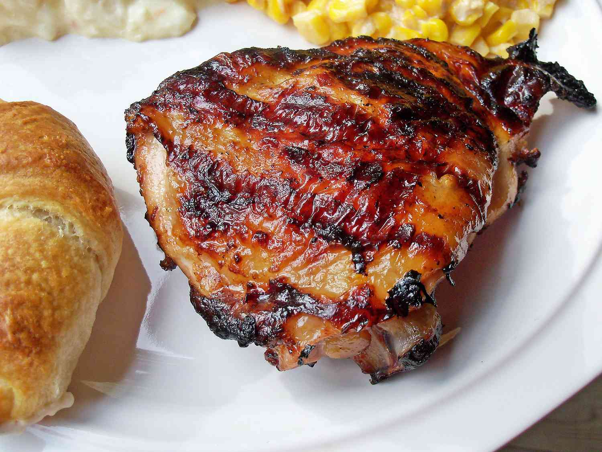

Italian Chicken Marinade

Description
This Italian dressing chicken marinade is a super simple but delicious way to add flavor before grilling.
Preparation time for the dish is 15 minutes. The dish cooks for 15 minutes as well. The total time it takes for the dish to be fully prepared is 4 hours and 30 minutes. Following the recipe instructions below will result in a dish that can serve 4 people.
Ingredients
- 1 (16 ounce) bottle Italian-style salad dressing
- 1 teaspoon garlic powder
- 1 teaspoon salt
- 4 skinless, boneless chicken breast halves
Steps
- Whisk salad dressing, garlic powder, and salt together in a shallow baking dish; add chicken breasts and turn to coat. Cover the dish with plastic wrap and marinate in the refrigerator, 4 hours to overnight.
- Preheat an outdoor grill for high heat and lightly oil the grate.
- Remove chicken from marinade and shake off excess; discard remaining marinade.
- Cook chicken on the preheated grill until no longer pink in the center and the juices run clear, about 7 to 8 minutes on each side. An instant-read thermometer inserted into the center should read at least 165 degrees F (74 degrees C).